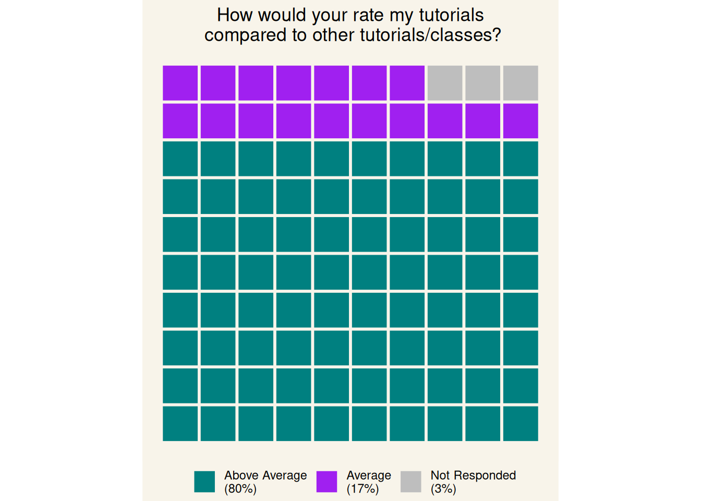

Students Review
When I started my PhD, I have also begun tutoring every semester. I enjoy teaching, interacting with students and sharing the knowledge I am passionate about. I often think about how to be a better educator, how to set up my tutorials and how to create a positive environment in my classes. I like to look at teaching through the lens of my past as a magician. Teaching is an act with a story to convey, attention to grab, and audience participation should be encouraged.
My idea of teaching may be far away from what the students want and need, I know. Unfortunately, the courses I teach do not ask students to provide feedback on their tutors, and I find this absurd. We are an integral part of their education experience, we should be able to know how we are doing and what we should work on. So, I have been actively collecting students’ evaluations for all the courses I teach. I do this at the end of each semester through an anonymous survey that students can voluntarily fill out.
In the name of transparency, I have decided to post all the anonymous feedback here. I will update this page each semester, and I will address the comments and reflect on what I need to work on.
As a side note, I try to encourage students to provide constructive feedback, and I try to stress that negative feedback is more than welcome. I really want to improve and work on how to be better, and negative feedback, if constructive, helps highlight things to change and work on. As such, I won’t hide any comments except if they are un-constructively negative or contain some sensitive information. I will add a note if this happens.
One of the survey’s question is to provide 3 words that describe me as a tutor. Above is a summary of the words provided so far
Students’ marks
Let’s start with a simple and fun (hopefully) section where I swap the roles with the students and they are able to grade my work.

Happy to see that there is nothing in Below Average and that the way I am currently running the tutorials is appreciated.
In terms of marks, the grades below are scaled by their relative proportion. The larger the letter, the higher the number of students that selected that grade. Again, I’m happy to see the A+ and A being large!

What students appreciate
Now, we get to the core of the feedback. I will highlight at the top the comments that I think represent the major ideas. Nonetheless, at the end of the section, you can find an exhaustive table with all the feedback.
You were always super nice and friendly and you always made me feel super comfortable coming to class. I was also never nervous to ask you questions about assignments cause you were always very informative and good with helping.
You did a great job in tutorials giving people opportunities to ask for help of they needed it and checking to make sure we were on the right track. Also you kept it engaging by relating the various topics and ideas to your own interest and the wider ideas around the topic, encouraging broader thinking about it.
Tutorials are fun and friendly environments.
There are three main elements I think students appreciate:
1- The content should be presented differently from the lecturers. This makes the tutorial feel less like a simple repetition and more like an opportunity to learn more and/or understand better.
2- Give people time to ask questions. We all vary with how comfortable we are in asking questions in class. I encourage discussions, debates and questions since the very first tutorial to create an environment where everyone feels comfortable being an active part.
3- Engage. We all agree that listening to one person talking for two hours is boring. So why do this? Showing a more fun and natural side helps create a connection, keep the attention high and make the tutorial time more enjoyable.
I felt like the tutorials were quite good, maybe trying to put more organisation with our meetings and not just us asking questions and more information being given would be good.
I agree on this point. One of the aspects I need to work more on is structure (more on this in the next session). I do not want to have everything predefined, as this is counterproductive, but I will try to define at the beginning of the tutorial the key areas I will discuss.
| Feedback |
|---|
| Interactiveness, enthusiasm and motivation |
| I really loved your passion and the time you took to check everybody understood. Also appreciated when you would draw diagrams to help us understand when we were all struggling to understand. |
| I enjoyed the activities we did!! It was fun especially with how the content was pretty full on but the fact we got to discuss often with our peers was a good aspect for me. I also liked how you went through the content first explaining everything we similarly learnt in lectures before we started because hearing it from the way you talked about it helped me understand lecture content a bit easier. And the white board examples and the pictures helped immensely!!!! It made things so much easier to grasp so please continue that because reading of PowerPoint slides for me personally doesn’t feel engaging |
| Engaged with smaller group discussions by walking around the room Answered questions directly and was ready to do so in the middle of a presentation |
| Tutorials felt well prepared and always were well delivered, the content was explained clearly and sometimes having clarification of lecture material was super helpful. Your delivery was engaging and even content I'm not super into wasn't boring so thank you! You seem to be pretty into the topics that we covered which really helps. The feedback on the essay was pretty insightful too. |
| Trying to engage the class rather than lecturing, despite a lack of input form us 😆 |
| All content was explained clearly, and questions from the class were answered swiftly and very well. The way we walked through different programmes was extremely helpful for understanding the way they work and how data is arranged and understood. |
| You were fun and engaging, incredibly knowledgeable about the topics you were teaching, spent time with us one-on-one or in pairs when able and provided individual feedback + guidance |
| Constructive feedback allowing us to critically think |
| Always trying to make things fun and using interactive ways of learning, checking that everyone is understanding was really nice |
| I find it really helpful that you go in depth into the concepts as it helps me understand more. i also really appreciate in the tips you provide in our academic writing etc finding sources, i find them really helpful :) |
| I appreciated the quality of the content and how it was useful and complementary to the lectures |
| Everything is explained very well, you’re very patient with answering questions no matter how many are asked or if you get interrupted, you know the content well and relate it to us in a very simple and good way as well, you give us a very nice breakdown of how to write things and what to include in assignments (for the TBI essay) and in general you make it a very nice environment to be in and your chill/relaxed and funny vibe makes the tutorials far more engaging |
| Asked us questions that helped go to actively revise. |
| Support! You were very supportive and accurately explained what was required to do well in this class, and explained what we did not need to know as extensively - which was much appreciated as often times labs can be seen as just an overload of information. |
| i liked how you explained things in a different way to the lecturers which often made more sense to me. or having the content presented in a different way deepened my understanding of it. i liked how you took the time to explain something fully to me again if i still didn’t understand it |
| Giving supports to every student, really engaging with the class |
| tutorials are fun and friendly environments |
| Literally so fun for 9am on a Friday! You are just so engaging and knowledgeable and really get us thinking. Thanks for being such a legend! I really enjoy these labs |
| Always try to make tutorials fun, friendly demeanour in general, and genuinely trying to help us, thank you! |
| Always have interesting teaching way |
| Good at explaining thoroughly and gives a real opportunity for students to ask questions. Also answers questions as best as possible. Takes time to check in on each student/group individually and welcoming to ask questions to. Seems like you genuinely want to help your students understand everything clearly and do well. |
| You have always been very transparent and supportive of us. You helped us with everything you could and always gave us the right advice, pushing us to do so much more. The feedback on our assignments has been very thorough which also personally has helped me to incorporate into assignments from my other courses. |
| Support was great! feedback on the assignments was super helpful |
| Really encouraging and great with positive feedback. I really liked the feedback I received on my assignments throughout the course as it guided me as to how to improve in my work. |
| Explained alot of concepts and answers thoroughly and appreciated that he took the time to go through everything. Feedback felt subjective and catered to our learning |
| I felt like the tutorials were quite good, maybe trying to put more organisation with our meetings and not just us asking questions and more information being given would be good. |
| The feedback you gave on my blog post was super helpful! I didn't realise how much blog was lacking something big and your feedback helped me see it but you also provided specific tips to integrate so I didn't feel lost knowing I had alot of work to improve on :) You were also super on top of replying in teams and being there for support so that was something else that made you such an awesome tutor. |
| I appreciate how friendly and easy to approach you were. Unlike some other tutors, you really made it easy for us to ask questions - esp questions that we found hard to ask to other lecturers. Assignment feedbacks were extremely detailed and helpful and also very fair I personally think. I also like how chill you were - as long as we followed the rubric and did everything, you were very fair with your marking - literally made capstone life extremely enjoyable and rewarding to have a tutor who understood what you were doing! |
| Friendly manner, always willing to help |
| Feedback on assignments are good, you take the time to listen and help and make sure we understand |
| Very helpful, compassionate, supportive and understanding, explained really well |
| Explaining things throughly, questioning us and making us work things through |
| Good feedback & ways of trying to improve our learning. |
| You were very helpful and understanding of our places in knowledge. Your feedback was helpful in allowing for a better understanding. |
| The content covered was always relevant and helpful. Trying to engage the class |
| You were always super nice and friendly and you always made me feel super comfortable coming to class. I was also never nervous to ask you questions about assignments cause you were always very informative and good with helping. |
| Appreciated how patient you were, especially re-explaining something over and over again so our class understood. Your feedback and also going over and beyond. |
| i appreciated fast reply’s on email, and also giving feedback on assignments and work. friendly work environment |
| You did a great job in tutorials giving people opportunities to ask for help of they needed it and checking to make sure we were on the right track. Also you kept it engaging by relating the various topics and ideas to your own interest and the wider ideas around the topic, encouraging broader thinking about it. |
What students think I should do better
Sometimes the discussion time in tutorials felt too long and often we’d finish the task and end up going off task. Maybe less small group discussion and then a longer period for class discussion would have been more to my personal preference, but its not a major issue cause there was normally plenty of time anyway. Occasionally you start to rush when you get excited, which is fun to see but it can lead to us missing certain points sometimes.
I will try next year to have more class discussions and less small group work. A couple more people pointed this out. I believe that small groups would have encouraged people to talk more by reducing the pressure of having to speak out loud in front of everyone. However, doing this takes time that could be used differently.
Found the we had to rush some tutorials to fit within the 2hr time. Could try changing what info to include / exclude to fit within the 2hrs and no information is rushed. Could spend a little time going over lectures etc.
This is a fair point. I almost always take the full 2 hours, most likely because I like to digress. As pointed out above, next year I will try to structure each tutorial a bit more. Specifically, I will highlight at the beginning the major point we will discuss, and I will add a recap at the end. However, I will keep some improvisation. I believe that having just a general structure of what to talk about allows for the exploration of topics, concepts and ideas that otherwise won’t be addressed. Tutorials, in my view, are not just a recap of the lectures but a moment where we can dive deeper into a topic or create connections across different areas. They are useful to broaden our understanding of the concepts discussed in the lectures and, by doing so, learn the material better.
Would appreciate more concise marking, and felt marking scores were abit harsh sometimes compared to other students or the feedback received.
Given the multiple comments appreciating the lengthy feedback on the essays, I will not plan to change this. Assignments and exams are not just a test but an opportunity to improve and gain skills. By providing detailed feedback, students are able to improve their future work. I agree that I can be strict with my marking. This is partly caused by my study background and the way I have been assessed. Partly because I try to mark focusing hardly on the reasoning. That is, I don’t see just repeating the content from a book or lectures as being enough for an A+. The reasoning behind an answer is important. Nonetheless, in the class I teach, us tutors try to match our criteria, so if I am being too harsh, other tutors and professors will call me out on this before the marks are finalized.
| answers |
|---|
| Nothing really |
| Only suggestion I have is to speak slower. Your excitement and English are amazing, but when you speak really fast with excitement, it made it difficult to understand and keep up sometimes. |
| This isn't really a you thing but it was better communication with the lecturers (not really your fault) as it's kind of disheartening when tutors don't know whata's going on with what lecturers are doing for example when lab quizzes results are released or even whats going on with exams. I also wish we got to discuss with more of our peers around the room, not just the people we sat with but I guess that’s kind of hard with the layout of the room |
| Sometimes skipped over points too quick. |
| Sometimes the discussion time in tutorials felt too long and often we'd finish the task and end up going off task. Maybe less small group discussion and then a longer period for class discussion would have been more to my personal preference, but its not a major issue cause there was normally plenty of time anyway. |
| Occasionally you start to rush when you get excited, which is fun to see but it can lead to us missing certain points sometimes |
| Honestly, thought you were amazing. Maybe you could just slow down sometimes with your explanations because it can be a bit hard to keep up with |
| Genuinely cannot think of anything sorry |
| I am happy with the way the tutorials are going :) |
| I don't believe there is anything you could do better :) keep up the great work! |
| Honestly nothing, the way you do things is amazing |
| Summarise the lab at the end |
| I think maybe the first few labs had a LOT of information to be taught and not so much time for questions to be asked. This isn’t so much a tutor specific issue, rather it is a course coordination issue of how much is taught in those labs |
| occasionally (not often) i couldn’t understand what you were saying when you spoke fast |
| some tutorials cover ground that has already been covered in previous years, such as essay writing basics, though this is likely more of an issue with the general course coordination |
| More magic please! |
| Keep doing what you're doing :) |
| Maybe speaking a little bit slower is better |
| More of feedback for tutorials in general rather than the tutor but Maybe, especially in the first lesson, have more focus on having students introduce themselves in the class and have opportunities to work together and discuss with each other so that students can build relationships to each other and to tutor. |
| I honestly cannot think of anything because I believe you have been amazing and very supportive with the work that I have done. |
| I honestly cannot think of anything because I believe you have been amazing and very supportive with the work that I have done. |
| communication could've been better, at times was difficult to get our points across as our research differed greatly from yours, which is completely okay but having a tutor who knows the topic and understands the specific research would have made it a wee bit easier for you and us. |
| Would appreciate more concise marking, and felt markinf scores were abit harsh sometimes compared to other students or the feedback received |
| Maybe provide more tips on what we should be careful of when doing each assignment - like providing common places where student often lose marks or mess up |
| Nothing much - everything was all good! Don't really have much feedback |
| deeper explanation of that weeks lecture content |
| I think you are good |
| More magic and pizza |
| Nothing I love this tutor |
| Don’t overestimate students understanding of topics |
| I think maybe just more in depth feedback and being super critical, even though people might not like it it’s actually very helpful. |
| Found the we had to rush some tutorials to fit within the 2hr time. Could try changing what info to include / exclude to fit within the 2hrs and no information is rushed. Could spend a little time going over lectures etc. |
Extra comments
As my survey is meant to be quick, I leave the opportunity to express other ideas freely.
| answers |
|---|
| Great job! Thanks for being a great tutor! |
| Thanks so much for your help and enthusiasm! I found Psych 305 to be a really difficult class, but having you as a tutor helped me so much with the work content because your excitement made me get more excited about it, which helped me engage and learn better! I really loved having you teach us! All the best. :) |
| Thanks for a great semester!! |
| Thank you for teaching us over the past semester, and good luck with your PhD! |
| Great job. I personally hate tutorials, and you made them fun and engaging and made me look forward to coming :) |
| Thank you for a lovely lab! |
| I think you are a great tutor (: |
| thank you for all your hard work :) |
| Thank you! |
| I'm not actually in your normal stream but joined it once when I couldn’t attend my normal one and I enjoyed your tutorial so much that I made it my regular stream and have been coming along ever since |
| LOVE YOU DANIELE!!! You are an awesome tutor |
| you never gave us the pizza making class :( |
| Please keep tutoring! You're literally my fav! |
| Thank you for being such a lovely tutor this semester, I wish you luck on all your future eneavours. |
| No |
| Great mustache! And you did a great job giving students opportunity to ask questions individually (rather than to whole class) so felt more comfortable and open. Thanks! |
| Daniele is an amazing tutor and an amazing person. With great professionalism that can be seen on our assignments feedback and advice, he is super friendly and ensures that you are not being negatively criticised. He is highly supportive and always pushes you to perform to the best of your ability. |
| Daniele is an amazing tutor, who is thoughtful and empathetic. He is a great help to those who are stuck and need a direction. |
| Daniele was my tutor for my year 3 capstone course of my degree. He was an amazing communicator who was ways able to convey feedback in an depth manner - because of this I was motivated improve my work rather than seeing it as a daunting task. He also always came to meetings with a positive attitude and willingness to help! |
| Daniele is an extremely friendly tutor. Very thoughtful and always eager to help his students. His tutorial sessions were always helpful and his assignment feedbacks were very detailed and accurate. Would love to have him as my tutor for other classes too. |
| You are a great tutor. Continue to do the awesome work of teaching your students. |
| Daniele is very calm in nature and provides a positive environment that allows for learning and is very entertaining when adding his magic into his tutorials. |
| Daniele was a great tutor to have as he was always so nice to everyone and helpful when questions were asked. I learnt a lot in his class and it made me enjoy going to my tutorial because he was a good teacher. |